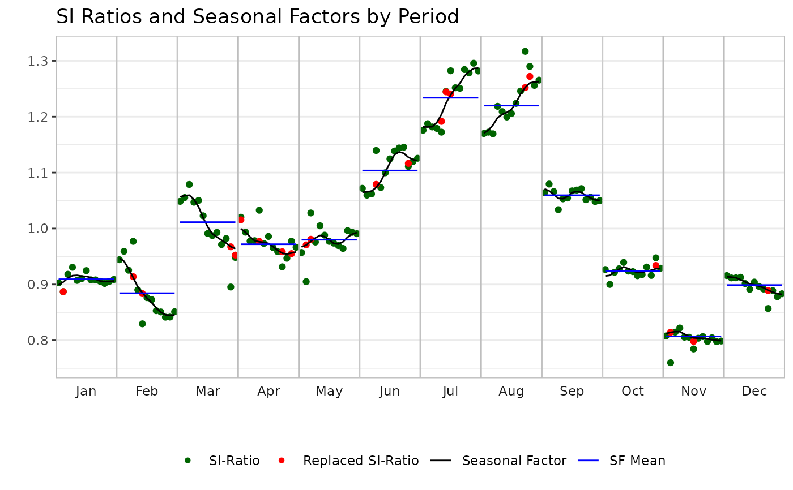

Create SI-ratio plots using either highcharter (interactive) or ggplot2 (static). This is a unified interface for plotSiRatiosHc and plotSiRatiosGgplot.
Usage
plotSiRatios(
x,
plotEngine = c("hc", "ggplot"),
main = NULL,
interactive = FALSE,
...
)Arguments
- x
an object of class persephone.
- plotEngine
character. Either
"hc"(default, interactive highcharter plots) or"ggplot"(static ggplot2 plots).- main
if
plotEngine="ggplot", plot title. Ignored for highcharter plots.- interactive
If
plotEngine="ggplot", whether to wrap in plotly for basic interactivity. Ignored for highcharter plots.- ...
other parameters passed to the underlying plot function. Not currently used.
Details
For x13Single objects, displays SI-ratios, replaced SI-ratios, seasonal
factors, and their mean. For tramoseatsSingle objects, shows SI-ratios
and their mean.
Examples
x <- perX13(AirPassengers)
x$run()
plotSiRatios(x, plotEngine = "hc")
plotSiRatios(x, plotEngine = "ggplot")

plotSiRatios(x, plotEngine = "ggplot", interactive = TRUE)